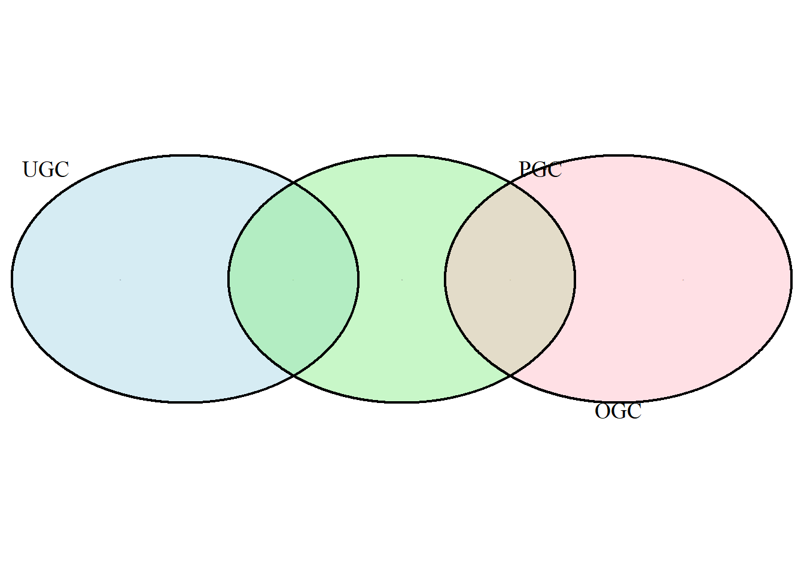

mindmap
root((E-commerce))
总体运营 Overall operating
平台流量 Web traffic （场）
客户价值 Customer value （人）
商品价值 Goods value （货）
销售转化 Sales conversion
市场营销 Marketing
3 行业指标梳理
3.1 概览
本章是行业的指标梳理。主要分为电商(E-commerce)、短视频(Short Video)、直播/直播电商(Live)、社交媒体(Social Media)、风控。
指标体系的目的是为了了解业务全貌，快速业务定位问题、以及明确解决方案。
首先，是要确定我们的战略目标，以及与之对应的北极星指标。第二步，看为了达到这个北极星指标所需要达到业务链路是哪些（例如AARRR模型：Acquistion：获取用户；Activation：提高活跃度；Retention：提高留存率；Revenue：获取收入；Refer：自传播）。第三步，围绕业务流程设计维度和指标。第四步，最后用趋势、对比、细分、分布的方式去aggregate各种指标；趋势即通过折线图看到数据指标的走势和波动，让涨跌幅度可视化；对比包括同比和环比，同比是指今年某月/某季度和去年某月/某季度相比，环比可以是环比上周/上月；对比数据除了能反映出业务发展情况之外，还可以帮助排除季节性或周期性的影响因素；细分是指某个指标的具体来源组成，比如在看商品详情页的曝光量的时候，不仅要看总曝光量，还要分析每个曝光是从哪个页面进来的（首页、活动页、搜索框、商品分类页、排行榜页等等）；分布是指某个指标的来源占比，比如上面这个商品的曝光量来源。第五步，形成分析SOP和数据看板。
3.2 电子商务(Ecommerce)
并非所有的指标都有价值，我们需要确定需要跟踪的关键绩效指标（KPI）来提高绩效。在线销售是可靠增长是来自于分析业务不同部分随时间变化的绩效。随着时sss间的推移，跟踪正确是指标将提高在线销售。行业有着共同的KPI，但是每个企业都有独特的KPI需要定期跟踪和分析，以改进其产品、服务或与客户的互动。All KPIs are metrics;not all metrics are KPIs.
3.2.1 Mindmap
mindmap
root((总体运营 Overall operating))
维度
顾客/用户 Customer
商家/店铺 Merchant
店铺类型 Store type(个人Individual/企业Enterprise/钻级Level等)
指标
PV（Page View）/UV（Unique Vistor）
商品交易总额GMV(Gross Merchandise Volume)
订单数 Number of orders
客单价 （销售额/交易次数）/ATV(Average Transaction Value)
销售额 Revenue
成本 COGS
毛利率 Gross margin
mindmap
root((平台流量 Web traffic（场）))
维度
时段 Time period
PC/Mobile
不同板块 Section
页面位置 Page
主页Home
商品详情页Product detail
购物车页Shopping cart
指标
PV/UV
DAU、WAU、MAU（Daily/Weekly/Monthly Active Users）
用户粘性User stickiness(DAU/MAU)
页面访问时长
页面访问数量
mindmap
root((客户价值 Customer value（人）))
维度
新老客 New/old
年龄层 Age group
性别 Gender
城市 City
是否会员 Membership
注册来源 Register source
注册时长 Register time
行业 Industry
指标
RFM分类
AARRR分类
其中RFM分类如下表所示，可以基于此给用户打分。
| 用户分类 | 最近一次消费时间间隔 (R) | 消费频率 (F) | 消费金额 (M) |
|---|---|---|---|
| 1. 重要价值用户 | 高 | 高 | 高 |
| 2. 重要发展用户 | 高 | 低 | 高 |
| 3. 重要保持用户 | 低 | 高 | 高 |
| 4. 重要挽留用户 | 低 | 低 | 高 |
| 5. 一般价值用户 | 高 | 高 | 低 |
| 6. 一般发展用户 | 高 | 低 | 低 |
| 7. 一般保持用户 | 低 | 高 | 低 |
| 8. 一般挽留用户 | 低 | 低 | 低 |
AARRR分类如下图所示：
graph LR
subgraph AARRR["AARRR模型"]
direction LR
A[Acquisition 获取]
B[Activation 激活]
C[Retention 存留]
D[Revenue 收益]
E[Referral 推荐]
end
%% 子内容展开
A --> A1["用户从不同渠道来到产品"]
B --> B1["用户完成核心任务（首单价）"]
C --> C1["留存率"] & C2["复购率"] & C3["xx时间段活跃"] & C4["分享UV数、次数"]
D --> D1["付费行为"]
E --> E1["K因子/NPS"]
%% 样式优化
style AARRR fill:#F0F8FF,stroke:#4682B4
K-factor是用来衡量产品病毒式传播能力的指标。它告诉我们平均每个现有的用户能够带来多少新用户。
- 计算公式：（每个用户发送的邀请数）*（邀请的转化率）
- 大于1意味着用户会自然增长，因为每个用户带来的新用户不止一个。这通常是产品获得病毒式增长的标志；小于1意味着产品需要通过其他营销手段来获取新用户。
NPS(Net Promoter Score)是衡量客户忠诚度和推荐意愿的指标。
通过询问客户“有多大程度上愿意向朋友或者同事推荐产品”来衡量。根据得分，用户被分为三类：
推荐者（Promoters）：9-10分，是忠实且热情的用户
被动者（Passives）：7-8分，对产品满意但不热情，容易被竞争对手吸引
贬损者（Detractors）：0-6，对产品不满，可能传播负面口碑
最终分数：NPS = （推荐者百分比）-（贬损者百分比）
mindmap
root((商品价值 Goods value （货）))
维度
业态（食品、服装、美妆、数码、家居..）
品类（生鲜、女装、护肤、手机、床品..）
商品品牌
商家/店铺
SKU（Stock Keeping Unit）库存量单位
代表了商品的最小可售卖单位
每个SKU都有自己独特的编码，以区分商品的每一个具体属性。
一件“红色M码的T恤”
SPU（Standard Product Unit）标准化产品单位
代表了具有共同属性的商品的集合，是商品的抽象单位。
一个SPU可以包含多个SKU
“红色T恤”
指标
价格 Price
折扣率 Discount rate
销售量 Sales volume
销售金额 Sales amount
X 客户价值
商品为客户带来的价值
功能价值
情感价值
经济价值
时间价值
mindmap
root((销售转化 Sales conversion))
维度
顾客/用户
商家/店铺
指标
各种行为 DAU
各种行为 转化率 Conversion rate
各种行为 商品数
各种行为 商品金额 Total amount of goods
行为漏斗
登录 Log in
曝光商品
浏览商品 Browse products
添加购物车 Add to cart
下单 Place orders
支付 Pay
退款 Refund
mindmap
root((市场营销 Marketing))
维度
商家 Merchant
品牌 Brand
广告位 Ads location
活动类型 Campaign
优惠券类型 Coupon
指标
点击通过率 CTR (Click Through Rate)
每用户点击成本 CPC (Cost Per Click)
千人展现成本 CPM (Cost Per Mille)
投资回报率 ROI (投入产出比)
各种行为转化率
优惠券核销率、杠杆率 Coupon use rate
曝光/触达 Exposure
行为
访问平台 Access
新用户注册 Register
新用户首单交易成功 First order
营销商品交易成功 Marketed goods be purchaseds
3.2.2 关键电商指标
3.2.2.1 电商销售方面指标
这些指标侧重于：运营和改进电子商务商店、在线销售和支付以及增加的收入。
一、转化率
访问网站并查看产品后购买的客户数量。代表了基于客户查看产品 的实际销售额。将其与页面浏览量、平均订单价值和流量来源进行比较，可以更深入地了解用户行为。
二、毛利率
实际利率。
三、平均订单价值(AOV)
平均客户订单的货币价值。还需要跟踪平均放弃订单价值(AAOV)，即在后买的结账或购物车阶段放弃的订单的平均价值。从整体上跟踪AOV，然后按设备类型、平台、流量来源进行细分。确定AOV最高的客户来源可以帮助我们开展更多高投资回报率的营销活动。
四、每次获取成本
获得新用户的成本。包括广告成本、电子邮件活动、提供的折扣以及实际向客户进行销售所需的任何其他费用。可以了解真正获得付费客户需要付出的成本。可以与许多其他指标进行比较，包括平均订单价值、流量、客户生命周期价值等等，以了解赢得客户的成本。
五、购物车放弃率
指将商品添加购物车后放弃购买的客户百分比。添加到购物车的商品数量、添加到购物车的商品价值以及他们购物的时间也都很重要。通过跟踪此指标，可以深入了解有多少客户对产品感兴趣但是没有继续购买。通过将其与此列表中的其他指标进行比较，可以制定降低放弃率并吸引更多客户进行销售的营销方案。
六、结账放弃率
启动结账然后放弃购买的客户的百分比。这比购物车放弃更近一步，这以为这我们花费了更多的精力来让他们达到那个阶段。跟踪这个指标为我们提供了有关客户准备购买后未完成交易的具体信息。
七、客户终身价值（复购）
客户终身价值(CLV)是作为用户的每个人的整个生命周期中平均赚取的收入金额。它本质上分解了一个客户对于我们来说的平均价值，并区分了现在购买200元的客户好在未来五年内购买100元产品10次的客户—–哪一个实际上对我们更有价值。这个指标使得我们深入了解每个客户对我们的价值。将其直接与客户获取成本、转化率、流量进行比较，以了解营销和客户获取活动的投资回报率。
八、广告支出收入
将收入除广告成本，可以获得基于广告成本的平均回报收入的比率，该值是我们从每笔广告费中赚取的金额。跟踪它，使得我们根据当前成本和收入衡量赚取收入的平均广告成本。我们可以使用它来深入了解让客户完成购买需要花费多少广告费用。我们致力于通过尝试新的、更有效的广告方法来提高广告的投资回报率。
3.2.2.2 用户体验方面指标
这些指标侧重于：用户如何使用我们的产品并与之互动、服务性能和速度、跨设备类型和平台的完善服务以及网站流量。
九、设备类型
按照设备类型细分，以进一步了解哪些设备更频繁地使用，并针对每种设备类型定制网站的用户体验。跟踪这个指标可以为每个平台构建移动优化体验。尝试在不同设备类型之间保持一致的流程，但在不同设备（移动设备、网络和平板电脑）上测试性能，以了解客户的购买方式以及那种设备的工作效率最高。
十、网站速度
网站速度和结账加载时间对于维护和吸引电子商务网站上的客户非常重要。电子商务平台的性能、效率和速度是购物者体验的核心。监控页面的速度，特别注意与购物车和结账相关的页面。
十一、客户参与
客户对服务的参与程度，通常使用反应、分享和订阅来衡量。客户越活跃、越感兴趣，就越有可能购买、分享。我们可能需要跟踪的包括：用户在商店页面上停留的时间、用户最倾向点击每个页面的哪些区域、访问网站后再次访问的比率、通过社交渠道分享的用户、关注一些实时营销渠道并不取消订阅的用户等等。跟踪这个指标可以衡量用户在产品体验中的活跃程度和沉浸程度，因为这种活动和兴趣可以转化为忠诚度和收入。
十二、跳出率
指仅访问一个页面后突然离开网站的客户比例。这通常说明存在着严重的用户体验问题，例如页面加载缓慢、外观或者导航延迟，也可能是营销定位不佳的迹象，因为广告所带来的客户没有在网站或待售产品中找到价值。我们使用跳出率来激励提高网站或应用程序的粘性。制定策略以降低跳出率，让更多的客户对产品感兴趣，建立客户忠诚度并引导购买。
3.2.2.3 客户支持与满意度方面指标
这些指标侧重于：客户需要哪些支持方法、何时将用户连接到支持的最佳实践，以及捕获有关平台的有用反馈。
十三、客户调查结果和反馈
定期进行客户调查并获得反馈，尤其在网站发生更改或者引入新功能时。愿意留下反馈的客户百分比是衡量客户对应用和产品感兴趣的一个指标。用户没有离开去并一个电子商务网站，而是给出反馈并希望得到改善。
十四、客户评论
了解客户想法、需求。
十五、客户联系方式（电话、邮箱）
注意用户最常使用的渠道。
十六、平均工单解决时间
也成为服务级别协议时间(SLA)。跟踪平均SLA以及从工单创建到解决（打开到关闭）的平均时间。缩短平均响应时间意味着首次购物者将有可能重复购买。
3.2.2.4 营销方面指标
这些指标侧重于：网站流量、客户参与方法和曝光度。
十七、流量来源
确定顾客来源的主要渠道，以帮助改进营销和广告。来源包括付费广告、自然搜索网站、推荐、直接输入网页等等。分析以利用最佳渠道。加倍关注被证明有效的流量来源，并减少对流量产生最低的来源的工作量。
十八、流量
以用户以及用户访问时间来衡量。可以作为一个整体来研究，也可以细分为更具体的一些指标，例如每次访问的页面的浏览量、网站停留时间、跳出率、新客户和回头客。衡量流量峰值以及平均值，并将这些数据与电商销售指标结合，以得出有关转化率、放弃和投资回报率的观点。
十九、社媒参与度（关注、参与、分享）和浏览量
提供直接的沟通渠道。利用这种交流与客户建立关系，从而培养未来的忠诚用户；并帮助制定的社交媒体策略，提升影响力。进一步，虽然病毒式的传播可能具有价值，但是建立稳定。忠诚的读者群是建立可持续增长和可靠收入来源的更好方法。
3.2.3 如何选择KPI
使用SMART方法。
3.2.3.1 S.Specific
KPI必须清晰、明确，不能模糊不清。不能是模糊的“提高销售额”，而应该说“将本季度的线上销售额提高10%”。
3.2.3.2 M.Measurable
必须是可以量化，可以被追踪、衡量的。比如“新增500个用户”。
3.2.3.3 A.Achievable
必须显示可达成，不可假大空。
3.2.3.4 R.Relevant
与现实业务关联。
3.2.3.5 T.Time-bound
必须有明确的截止日期。
3.3 短视频Short Video
3.3.1 短视频平台的生产机制
短视频平台用算法和激励制造出流量繁荣的假象，但背后创作者、用户和生态本身都在被慢慢消耗，这种机制既让平台看起来很繁荣，但是暗中积累“内伤”。如下图所示：
flowchart TD
A[用户发布内容] --> B[平台算法分发]
B --> C[初始曝光量]
C --> D[用户互动数据收集<br>（点赞/评论/转发/停留时长）]
D --> E{数据表现如何?}
E -->|高| F[平台增加曝光]
E -->|低| G[平台减少曝光]
F --> H[创作者获得更多流量和收益]
G --> I[创作者流量下降、收益减少]
H --> J[创作者正反馈：继续创作或加大投入]
I --> K[创作者负反馈：焦虑/迎合算法]
J --> L[内容同质化、创作压力增加]
K --> L
L --> B
平台的算法分发决定了创作者的生存空间
创作者为了流量、收益等等不断生产内容
算法让大家卷到内容越来越同质化，最终影响创作生态
3.3.2 内容创作
- UGC（User-Generated Content，用户生成内容），它指的是由品牌官方、专业机构、行业专家或拥有专业技能的创作者所制作的内容。主要形式包括：
原创短视频：这是最基本的形式。用户通过拍摄、剪辑和配乐，创造出各种类型的原创内容，如日常生活分享、才艺展示、知识科普等。
挑战与热点话题：平台会发起或用户自发形成各种挑战（Challenge）和热点话题，用户通过使用特定的 BGM、滤镜或模板来参与，这会产生大量的 UGC 并形成病毒式传播。
合拍与二次创作：用户可以通过“合拍”、“Stitch”等功能，对其他用户的视频进行再创作。这种互动模式鼓励了用户之间的交流，并不断产生新的内容。
评论与弹幕：用户在视频下方的评论和弹幕，也属于 UGC 的一种。它们是用户与内容互动、表达观点的直接方式，有助于形成社区氛围。
在短视频平台，UGC不仅仅是内容的来源，更是一种社交货币和用户参与感的体现。正是因为人人都可以成为创作者，才使得这类平台能够迅速积累海量内容和用户。
- PGC（ Professional-Generated Content ，专业生成内容），它指的是由品牌官方、专业机构、行业专家或拥有专业技能的创作者所制作的内容。PGC通常具有较高的制作水准、更严谨的知识性或更强的权威性。
- OGC（ Occupationally-generated Content ，职业生成内容），这个概念用来描述介于 UGC（用户生成内容）和 PGC（专业生成内容）之间的一种内容形态。
生产者：OGC 的创作者通常是独立的专业人士、行业 KOL (意见领袖)、或签约的媒体内容创作者。他们依靠内容创作作为职业，具有一定的专业知识和制作能力。
特点：OGC 往往拥有比 UGC 更高的制作水准和专业性，但又比 PGC 更加独立和中立，不完全代表品牌官方的立场。
作用：OGC 在内容营销中扮演着重要的角色，它能以更客观、更具影响力的视角来传递信息，往往能获得消费者的信任。
举例：品牌邀请一位头部博主拍摄的付费测评视频；一位专业的游戏主播制作的游戏攻略视频；一个独立的影评人撰写的影评文章。

UGC和PGC的区别在于有无专业的学识、资质，PGC的生产创作主体在所共享内容的领域具有一定的知识背景和工作资历，UGC则没有。
PGC和OGC的区别在于是否领取相应报酬，PGC的生产创作主体往往是出于“爱好”，义务的贡献内容，不收取报酬；而OGC是以职业为前提，其创作内容属于职务行为，获取报酬。
UGC和OGC没有交集，在一个平台（网站）上，用户和提供商总是相对的，既是该平台的用户也是该平台的提供商的角色可能有，但属于极少的群体。
PUGC（Professional User Generated Content，专业用户生产内容），以UGC形式产出的相对接近PGC的专业内容。PUGC模式是UGC、PGC模式发展中逐渐演化出的一种全新生产模式，率先由国内数字音频领域提出，后延伸到视频内容生产领域，被认为是“互联网短视频长远发展的趋势”。
PUGC短视频既满足了用户对专业化、高品质内容的需求，又达到了贴近性且个性化的效果，满足了短视频用户的多种需求，极大程度提升了短视频平台内容的品味。
YouTube与B站目前是全球PUGC较为集中的社交型视内容网站，其中B站已经在内容战略上明确转向“建设PUGV( Professional User Generated Video)社区”。
PUGC与PGC、UGC的关系
从发展阶段上来说，PUGC是UGC、PGC模式在深度发育后为规避各自发展瓶颈而协商整合的结果。
PGC导向的长视颏（爱优腾）与UGC导向的短视频的平行发展格局已经确立，但两种生产方式的固有弊病也在逐渐极化：UGC尽管建构出生产的民主性与圈层化，但非专业性制作和扁平叙事造成了视觉品相的降低和叙事深度的缺失；PGC的专业研创保证了视觉与内容品质，但作为融媒体时代重要标志的个性化需求却被抑制。
因而，业务界开始寻求两种模式的组合：专业用户生产内容（PUCC）由此产生。这种模式要求保留内容作者的个性，同时对内容生产全流程的专业性进行把控，不仅维系了内容作者的核心性，同时在其生产链中植入了“专业化”的模块。
从生产模式来看，PUGC的生产链已经与传统UGC、PGC逐渐分异。目前，以B站为代表的PUGC视频生产模式的主流策略基本采用几种方式：
以UP主本人为核心的视频内容：利用专业团队辅助内容生产，以内容作者共同体的身份参与平台发布流程
专业视频内容团队直接生产内容，以作者身份在平台发布
UP主本人通过平台专业技能培训计划或自行学习，生产专业内容在平台发布
由此可见，PUGC的生产链已经与传统UGC、PGC逐渐分异：内容作者仍位于生产链的中心位置，但“专业化模块”以各种形式介入生产流程。这一独立的生产模式的形成对既有的UGC 、PGC模式研究提出了新的要求，尤其对PUCC模式语境下的作者核心性和专业化方面的研究亟需展开。
MGC（Machine Generated Content，机器生产内容或技术生产内容），指万物互联和全时在线的数据通过数据挖掘和智能算法生成海量的传感器资讯。如MGC新闻就是运用现代化的人工智能技术，由机器智能生产的新闻。通过摄像头、传感器、无人机等设备获取音视频线索，经由内部视频图像识别功能，让机器智能理解内容并做价值判断。随后与已有数据相关联，对语音语义进行检索和排列组合，智能生产审核新闻稿件，再经视频语音合成编辑、数据可视化系列过程，最终生成富媒体新闻。新华社发布的首条MGC视频新闻由媒体大脑中的“2410（智能媒体生产平台）”创造。
3.3.3 生产消费
待补充
3.3.4 Mindmap
mindmap
root((Short video))
平台流量 Web traffic
视频
作者Creator 内容生产
用户User 内容消费
mindmap
root((平台流量 Web traffic))
维度
时段
PC/Mobile
不同板块
页面位置
主页、推荐页、视频详情页..
指标
累计注册人数
新注册用户数
PV、UV、DAU、WAU、MAU、用户粘性（DAU/MAU）
人均每日使用时长
启动次数分布
收入
mindmap
root((视频))
维度
内容类型 Content
展现形式
图文、录屏、情景剧、真人口述
发布渠道 Post days
发布天数 Post days
视频时长 Video length
指标
播放指标
累计播放PV、UV
分时、分日播放量 play amount
人均播放次数 Number of plays per person
平均播放时长 Average play time
☆完播率 Completion rate
跳出率 Bounce rate
互动指标
互动量
互动行为间比率: 播放比、赞赞比
互动行为转化率: 互动人数/播放人数
如粉丝转化率
互动行为
评论、点赞、转发、分享、收藏、@人、保存、弹幕、关注、搜索、踩、举报、不感兴趣
mindmap
root((作者Creator（内容生产）)
维度
创作者主体类型
个人
团队
企业
头部KOL类型
娱乐明星
幽默搞笑
美食
音乐
萌宠
游戏
内容生产模式
UGC （User Generated Content）
PGC （Professionally Generated Content）
OGC （Occupationally Generated Content）
指标
粉丝量 Followers
播放量 Views
被互动量 Interactions
内容收入
聚合指标
内容生产者总数
内容生产者占用户比
mindmap
root((用户User（内容消费）)
维度
新老客
年龄层
性别
城市
操作系统
iOS
Android
注册来源
搜索、推荐、落地页、运营活动
网络
WI-FI
2345G
运营商
移动、联通、电信
注册时长
指标
日均、周均观看时长 Average daily use time
周活跃天数 Weekly active days
留存率 Retention rate
各种互动数
关注数
X内容
兴趣关键词
互动行为
评论Comment
点赞Like
转发Repost
分享Share
收藏、@人
保存
弹幕
关注
踩
举报
不感兴趣
求更新
3.4 直播Live
mindmap
root((Live))
平台流量
直播复盘
观众画像
mindmap
root((平台流量))
维度
时段
PC/Mobile
不同模块
页面位置
主页、推荐页、详情页..
指标
累计注册人数
新注册用户数
PV、UV、DAU、WAU、MAU、用户粘性（DAU/MAU）
mindmap
root((直播复盘))
维度
直播类型
购物、游戏、聊天、语音..
直播时间段
上午、下午、晚上
直播时长
指标
单场GMV
分时观看PV、UV
累计观看PV、UV
最高在线人数 PCU
平均在线人数ACU
千次曝光成交金额GPM
观看--下单转化率
单个观看UV价值 ARPU: 单个看播用户成交金额
下单用户平均UV价值 ARRPU
新观众占比、粉丝占比
观众平均停留时长
互动PV/UV
付费率
新增粉丝数
场间掉粉数
订单笔数
订单总金额
订单商品种类
商品
商品点击次数
带货商品数
动销商品数
商品点击人数
mindmap
root((观众画像))
维度
新观众、老观众
年龄
性别
兴趣
操作系统
安卓、ios
注册来源
搜索、推荐、落地页、运营活动...
观看来源
直播推荐、同城推荐、关注、PK、搜索、直播榜单
观看渠道
移动端、PC端
观看类型
购物、游戏、聊天、语音...
指标
日均/周均观看人数
观看直播场数
留存率
订单数
消费金额
ARPU/ARPPU
互动次数
互动转化率
互动行为
评论、点赞、转发、分享、收藏、@他人、保存、弹幕、关注、踩、举报、不感兴趣
3.6 风控
3.6.1 如何识别作弊用户
一般是爬虫或者渠道伪造的假用户
分类问题可以用机器学习的分类算法
渠道特征：渠道、渠道次日留存率、渠道流量、各种比率特征
环境特征：设备（家用户以低端机为主）、系统（刷量的一般系统更新比较慢）、wifi使用情况、使用时间、来源地区、ip是否是 blocked
用户行为特征：访问时间、访问时长、访问页面、使用间隔、次日留存、活跃时间、页面跳转行为（假用户的行为要么多于一致，要么过于随机）、页面使用行为
异常特征：设备号异常，ip异常（异地访问）、行为异常（突然大量点击广告、点赞）、数据包不完整
3.6.2 恶意刷单检测
机器学习分类算法
商家特征：商家历史销量、信用、产品类别、发货快递公司等
用户行为特征：用户信用、下单量、转化率、下单路径、浏览店铺行为、支付账号
环境特征（主要是避免机器刷单）：地区、ip、手机型号等
异常检测：ip地址经常变动、经常清空cookie信息、账号近期交易成功率上升等
评论文本检测：刷单的评论文本可能套路较为一致，计算与已标注评论文本的相似度作为特征
图片相似度检测：同理，刷单可能重复利用图片进行评论